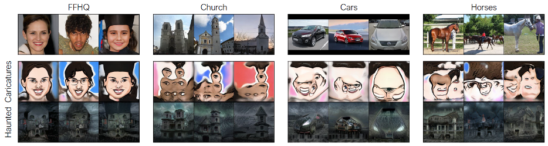

Generate a logistics dataset for an order picking task
업로드 예정
I. 프로젝트 개요
1. 프로젝트 소개
- 목표
- box depalletizing 에서 error case object 에 대한 specific 이미지 생성
- 기대 효과
- Error case 학습을 위해 별도에 학습 데이터 셋 구축을 위한 비용 없이 이미지 생성을 통한 데이터 셋 구축
- Error case 학습을 통해 specific 한 object 에 대해서도 정밀한 detection 가능
2. 개발 배경 및 필요성

- Expected problem
- Data: 현장에는 계속해서 새로운 박스들이 들어오는데, 모든 박스 데이터를 학습 데이터 셋에 포함할 수 없음
- Model: 학습 데이터 안에서 출현 빈도가 적은 박스는 충분하게 학습이 이루어지지 않음
- Service: Error case 에 박스 shape을 잘못 detect 하면, depalletizing 시, 박스가 훼손될 수 있고, 박스가 훼손된 상태에서 고객에게 배송이 될 경우, 책임 문제가 거론될 수 있음
- Solution
- Generative Model의 fine tuning을 통해 데이터의 일관성을 유지하면서 박스에 텍스쳐만을 생성하여 새로운 박스 텍스쳐에 강건할 수 있도록 하는 data augmentation 적용
3. 프로젝트 시나리오
4. 프로젝트 특성
- 이점
- 실험결과를 바탕으로 Error case 에 대한 조치가 가능하고, box depalletizing 모델에 성능을 저해하지 않음
- Data augmentation 효과를 통해 학습 가능한 분포를 넓혀 robust한 추론이 가능하도록 유도할 수 있음
- 요구사항
- 기존에 라벨링 정보와 데이터 셋(최소 100장).
- 현장 환경에서 촬영한 box 사진 5-10장
5. 실험 환경
- Cascade Mask R-CNN
- backbone: Swin Transformer(small_tiny)
- Pretrain: ImageNet-1K
- RTX 3090
II. 프로젝트 내용
1.이미지 생성에 문제점
- 추가적인 annotation 작업을 없도록 하기 위해 물류 센터 환경과 다양한 박스의 구조를 유지한채 박스 texture 만을 생성하는 것이 목표
- 하지만, 생성 모델은 다양한 입력 데이터를 통해 High quality 에 이미지를 다양하게 생성하는 것이 가능하지만, 일관성 있는 개인화 이미지를 얻기 위해, pretrain model을 downstream task 에 맞게 fine tuning 수행이 필수적임
2. 요구사항
-
Fine tuning 을 위해 error case 에 대한 데이터가 필요한데. 확보 가능한 데이터의 수가 제한되고 단순히 fine tuning 만으로는 개인화된 이미지 생성이 어려움
-
따라서, Few shot learning 과 추가적인 condition을 줄 수 있는 방법을 적용하여 개인화된 데이터를 얻을 수 있도록 해야함
3. Generative Model
- Model
- GAN
- 학습, 생성 속도 측면에서 diffusion 기반의 모델에 비해 상대적으로 빠른 생성 속도를 가지고 있지만, 학습이 불안정
- Diffusion
- 안정적인 학습과 고품질에 이미지 생성이 가능하지만, 계산 비용이 큼
- GAN
- Learning
- Few shot learning
- Few-shot Image Generation via Cross-domain Correspondence(Utkarsh Ojha, undefined., et al, “Few-shot Image Generation via Cross-domain Correspondence,” 2021.) 
- DreamBooth: Fine Tuning Text-to-Image Diffusion Models for Subject-Driven Generation(Nataniel Ruiz, undefined., et al, “DreamBooth: Fine Tuning Text-to-Image Diffusion Models for Subject-Driven Generation,” 2023.)
- Few shot learning
- 적용 모델
4. 프로젝트 구성도
5. 프로젝트 수행 계획

III. 프로젝트 수행 내용
1. 마스킹
- 물류 센터 환경과 다양한 박스의 구조를 유지한채 박스 texture 만을 생성하기 위해 마스킹 영역으로 생성 범위를 제한
- Prompt 입력은 특정한 박스 texture에 생성에만 집중하고 mask입력은 영역 정보를 제공
- 기존 데이터 셋에서 주어진 Segmentation data 정보를 활용하여 특정 부분만 생성할 수 있도록 guide를 제공
1-1. 마스킹 생성
- 고정 마스킹
- 우선적으로 물체 범위에 사각형 마스킹을 씌우면, SAM(Segment Anything Model)을 활용해 탐지된 segment 영역별로 마스크를 생성
- annotation 정보를 활용한 마스킹
- 기존 물체에 annotation 값을 가지고 마스킹을 생성
1-2. 비교
고정 마스킹에 경우 모델에 정확도에 따라 부정확안 마스킹이 생성되거나 고정 마스킹 크기 지정에 대한 기준이 명확하지 않음 따라서, annotation 정보를 활용한 마스킹에 각 물체를 마스킹함
2. texture 생성
- 기존 이미지의 박스 texture 여러개를 error case object 로 적용
- 기존 이미지의 박스 texture 하나만을 error case object 로 적용
2-1 texture 생성 비교
기존 이미지의 박스 texture 여러개를 error case object 로 적용할 경우 마스킹 영역과 생성된 texture 영역이 맞지 않음 따라서, 기존 이미지의 박스 texture 하나만을 error case object 로 적용
3. 데이터 취득
- 내부 데이터 셋 혹은 자체적 데이터 취득
- A. 박스 주변부까지 취득
- 목적: 주변부의 박스도 같이 생성하여 자연스럽게 생성 가능
- 한계: 여러 박스의 texture를 생성하기 때문에 생성되는 박스의 수를 prompt로 컨트롤하는 것이 어려움
- B. 박스 texture만 취득
- 목적: 배경을 컨트롤 할 필요 없음/
- 한계: 박스의 구조를 학습하는 것이 어려움
- C. 박스 texture 취득과 임의의 배경
- 목적: 현장 주변 환경까지 반영한 생성
- 한계: 낮은 품질에 이미지를 생성
- A. 박스 주변부까지 취득
- 외부 오픈 데이터 셋 혹은 인터넷 상에 이미지 취득
- A. 인터넷 상에 이미지
- 목적: 높은 화질에 이미지로 정보량이 많기 때문에, 객체에 디테일을 학습하는 것이 용이
- 한계: 시간적 비용 발생

- A. 인터넷 상에 이미지
3-1. 데이터 취득 방법 비교
외부 오픈 데이터 셋 혹은 인터넷 상에 이미지 취득하여 학습
4. Caption
- 방향과 색상을 프롬프트로 제어 가능
- 이를 통해 다양한 결과를 하나의 texture 에서 생성가능하고 학습 모델에 일반화를 유도할 수 있음
5. depth
- Depth condition이 주어졌을 때와 없을 때에 이미지 생성 차이
- Depth condition을 적용하여 texture를 박스 모형에 맞게 생성
IV. 결과
- 정성적 결과
-
원본 이미지와 생성 이미지
-
각각의 원본 이미지와 생성 이미지 비교
-
Texture 덮어쓰는 것과 다르게 주변 환경에 빛, 그림자, 반사와 같은 요소들도 반영되어 적용
-
각각 다른 데이터 셋으로 학습한 Cascade Mask R-CNN 모델에 bbos/segmentation 탐지 결과
-
- 정량적 결과
- 테스트 데이터 셋을 통해 각 데이터셋 별로 학습한 모델에 결과값
- 생성 데이터 셋을 추가로 학습한 모델이 원본 이미지에 대해 학습된 모델에 학습 성능 저해하지 하지 않고 성능 향상을 이뤄냄